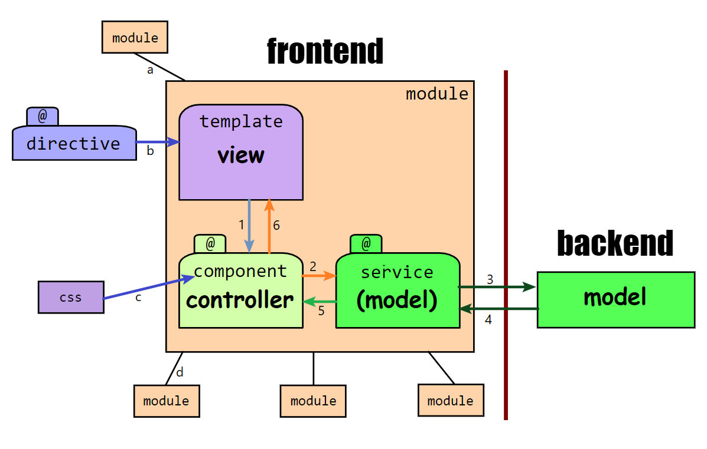
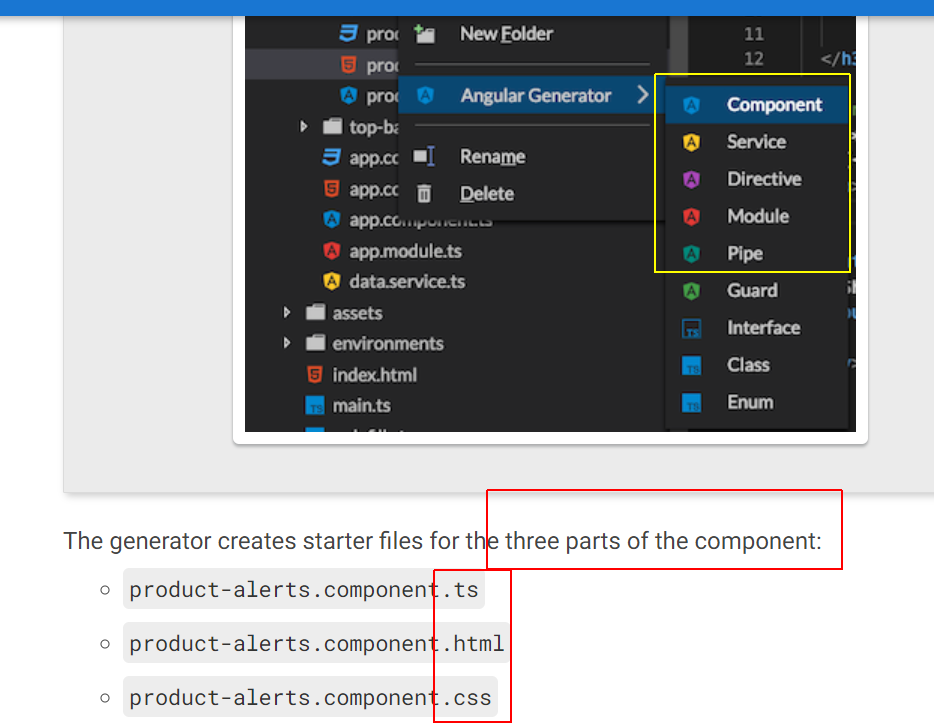
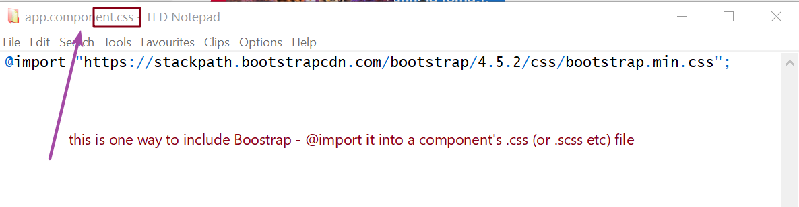
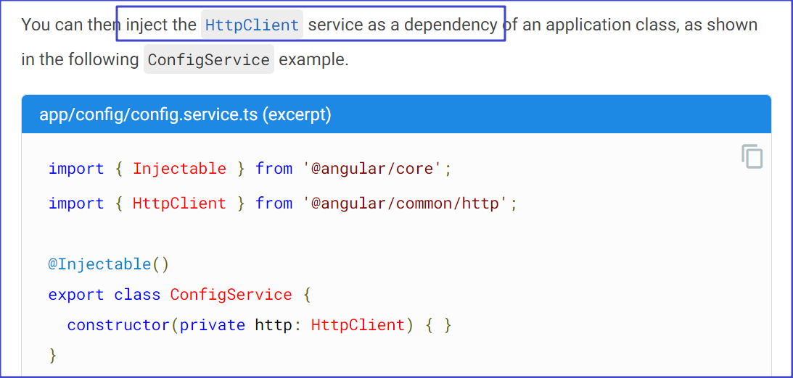
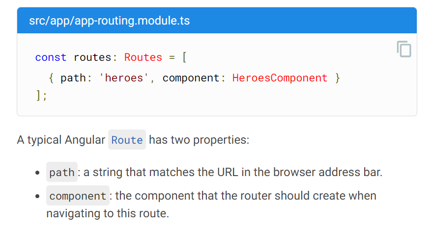

***
←
→
Frameworks
NodeJS
Angular
[standardization/modularization]
|
JS libraries SIMPLIFY app dev
As you know JS can be used to create/access HTML elements, and style them (ie. set CSS props on them). A library can help simplify writing code for this.
jQuery ("jQ") was the first such library. $(<elementID>) is how we access an element, as opposed to document.getElementById(<elementID>). Here is an example of what it looks like.
'Reactivity'
UI elements need to react to events, need to be updatable easily. Eg a button click can fetch weather data, an image element can show changing images, etc.
We CAN write our own JS code, to manage the state of UI elements. But, 'frameworks' can make this MUCH easier for us.
'Templates' can help us write web components. Eg. see https://lit.dev/docs/v1/lit-html/getting-started/.
More:
- https://developer.mozilla.org/en-US/docs/Web/Web_Components
- https://open-wc.org/codelabs/basics/web-components.html#0
- https://webcomponents.dev/user/m4dz?collection=all-the-ways
- https://webcomponents.dev/blog/all-the-ways-to-make-a-web-component/
A 'framework'
A framework is an app dev environment (not a code 'IDE'), which includes libraries and tools, and is based on a software architecture.
A framework provides a quick, standardized way to set up (the 'framework' of) an app - we can then continue building the app, to get the specific functionality we desire.
A powerful frontend/backend pair
Node+Angular is a popular 'pairing' of frameworks, for web app development. They are part of the 'MEAN' stack: MongoDB, Express, Angular, Node.
Here is more, on Node and Angular.
Angular: architecture
Below is my visualization of how various pieces fit together in Angular:

- an Angular app is a collection of modules (containers)
- a module encapsulates a component, and services that the component requires
- a module can import other modules (to use their functionality), and can export parts of its functionality to other modules - this is not inheritance (there is no notion of overriding, or member hierarchy)
- a component is a controller that binds with a template, and with services that it depends on
- services get connected to components, via 'dependency injection' (DI)
- a component can also include a style specification (for use by its template), eg .css, along with its own .ts controller code and .html template spec
- a template is a view, which gets rendered - users interact with it
- directives can be included in a template, to procedurally control the rendering [eg. using if(), or for()] of DOM HTML elements, eg. as dictated by incoming data
- templates can contain data and style variables whose values would be supplied by the controller
- templates generate user events which are passed over to the controller
- templates, components and services have '@' metadata that specifies their role/behavior
- the backend usually contains (or can fetch, or generate) the model [data] that the frontend will render into its views; this is handled via usual http-based requests (eg. using GET) and server responses (eg. as JSON)
- routes are used to map (redirect) url components (paths) to Angular components (which would instantiate corresponding views via their templates, to handle the rendering that corresponds with the url that is specified)
- in the diagram above, 1 → 2 → 3 is a 'forward' path, from user action to server request; 4 → 5 → 6 is the reverse path, from server response to rendered (eg. updated) view
- ...




API calls, for testing
Here are some 'practice' endpoints (to use with your front/backend)...
- https://api.openweathermap.org/data/2.5/weather?zip=94040,us&appid=4d6ed283bb1620f68ad8b4ce845178e3 (with my API key)
- https://api.themoviedb.org/3/search/multi?api_key=97588ddc4a26e3091152aa0c9a40de22&language=en-US&query=game [from HW6]:
- https://dog.ceo/api/breeds/list/all [from https://dog.ceo/dog-api/ :)]
You can use this JSON viewer/editor to browse the results from above, if you like.
Snippets!
Here are some pieces of code, ideas, demos...
<link rel="stylesheet" href="https://cdnjs.cloudflare.com/ajax/libs/twitter-bootstrap/4.0.0-alpha.5/css/bootstrap.css">
<h4 class="card-title">{{movie.title }}
https://bytes.usc.edu/~saty/tools/xem/run.html?x=bare#CjxsaW5rIHJlbD0ic3R5bGVzaGVldCIgaHJlZj0iaHR0cHM6Ly9jZG5qcy5jbG91ZGZsYXJlLmNvbS9hamF4L2xpYnMvdHdpdHRlci1ib290c3RyYXAvNC4wLjAtYWxwaGEuNS9jc3MvYm9vdHN0cmFwLmNzcyI+Cgo8ZGl2IGNsYXNzPSJjYXJkIj4KICA8aW1nCiAgICBzcmM9Imh0dHBzOi8vdXBsb2FkLndpa2ltZWRpYS5vcmcvd2lraXBlZGlhL2VuLzkvOTgvQ29jb18lMjgyMDE3X2ZpbG0lMjlfcG9zdGVyLmpwZyIKICAgIGNsYXNzPSJjYXJkLWltZy10b3AiCiAgICBhbHQ9Ii4uLiIKICAvPgogIDxkaXYgY2xhc3M9ImNhcmQtYm9keSI+CiAgICA8aDUgY2xhc3M9ImNhcmQtdGl0bGUiPkNvY288L2g1PiA8IS0tIHt7bW92aWUudGl0bGV9fSAtLT4KICAgIDxwIGNsYXNzPSJjYXJkLXRleHQiPiA8IS0tIHt7bW92aWUuZGVzY319IC0tPgogICAgICBDb29sIG1vdmllLi4uCiAgICA8L3A+CiAgICA8YSBocmVmPSIjISIgY2xhc3M9ImJ0biBidG4tcHJpbWFyeSI+Q2xpY2shPC9hPiAKICA8L2Rpdj4KPC9kaXY+IAo=
https://mdbootstrap.com/docs/standard/components/cards/
npm install -g @angular/cli
ng -v
ng new myapp
cd myapp
ng -serve --open
clips/AngularStart.mp4
clips/NodeStart.mp4
Axios, with simple UI: ex/AxiosPlusUI.html